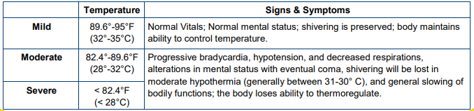

| History | Signs and Symptoms | Differential |
|---|---|---|
|
• Age • Ambient temperature • Exposure to wind / water • Duration of exposure • Past medical history / Medications • Alcohol or illicit drug use |
• Altered mental status / Coma • Cold, clammy • Shivering • Extremity pain or sensory abnormality • Bradycardia • Hypotension or shock |
• Metabolic disorders (hypoglycemia, hypothyroidism) • Sepsis • Environmental exposure • Shock • CNS dysfunction (stroke, brain injury, spinal cord injury) |
Classification 
1. UNIVERSAL PATIENT CARE.
2. Cautiously assess pulse for one full minute; unnecessary CPR could precipitate ventricular fibrillation. If
patient has a pulse go to step #5.
3. If patient is pulseless and apneic after one full minute, refer to
HYPOTHERMIC CARDIAC ARREST section.
4. Manage airway per the AIRWAY MANAGEMENT Protocol; assist ventilations with BVM but do not
hyperventilate as hypocarbia may reduce the threshold for V-Fib in the cold patient.
5. Handle patient gently; DO NOT massage cold extremities.
6. Move patient to a warm environment; remove any wet clothing and replace with dry sheets and blankets.
7. Hot packs may be applied to arm pits, groin and abdominal areas.
8. Assess and treat for other injuries as necessary.
9. Relay information to incoming ambulance or call for intercept per
INTERCEPT CRITERIA.
1. Continue EMR / EMT TREATMENT.
2. Establish IV access.
3. Administer NORMAL SALINE or Lactated Ringers 500 mL fluid bolus and reassess patient. Use warmed (102°-
106°F) fluid if available.
4. May repeat fluid bolus as needed as long as lungs remain clear; maximum 2 liters.
Patient Presentation
Patients with frostbite will develop numbness involving the affected body part along with a “clumsy” feeling and areas
of blanched skin - later findings include decreased or loss of sensation, bruising or blister formation, white and waxy
appearance to affected tissue, or feeling like a block of wood.
1. Remove from cold.
2. UNIVERSAL PATIENT CARE.
3. Do NOT massage frostbitten extremities.
4. Cover frostbitten nose or ears with a warm hand
5. Elevate the effected extremity when possible.
6. Have patient place frostbitten hand in his / her armpit.
7. If ETA is greater than 60 minutes, begin active rewarming:
a. Immerse extremity in circulating water maintained at a temperature of 100-105 F.
b. Rewarming should take 30-60 minutes.
c. Rewarming is complete when frozen area is warm to touch and deep red or bluish in color.
d. After rewarming, dry gently and cover part with dry sterile dressing and elevate on pillow.
1. Cautiously assess pulse for one full minute; unnecessary CPR could precipitate ventricular fibrillation.
2. Begin CPR and apply AED. Follow
CARDIAC ARREST Protocol.
3. Manage airway per AIRWAY MANAGEMENT.
4. Relay information to incoming ambulance or call for intercept per
INTERCEPT CRITERIA.
1. Continue EMR / EMT TREATMENT.
2. Follow appropriate dysrhythmia protocol.
3. Establish IV access.
4. NORMAL SALINE or LACTATED RINGERS at wide open rate; use warm solution (102°-106°F) if available.
Max 2 liters.
PEARLS
Hypothermic Cardiac Arrest
• The following are contraindications for initiation of resuscitation in the hypothermic patient:
a. Obvious fatal injuries (such as decapitation).
b. The patient exhibits signs of being frozen (such as ice formation in the airway).
c. Chest wall rigidity such that compressions are impossible.
d. Danger to rescuers or rescuer exhaustion
• Fixed and dilated pupils, apparent rigor mortis, and dependent lividity may not be contraindication for
resuscitation in the severely hypothermic patient.
• The mainstay of therapy in severe hypothermia and cardiac arrest should be effective chest compressions
and attempts at rewarming. Chest compressions should be provided at the same rate as in normothermic
patients.
• The temperature at which defibrillation should first be attempted in the severely hypothermic cardiac arrest
victim and the number of defibrillation attempts is unclear. There are different approaches regarding
resuscitation of the hypothermic arrest patient.
a. Per the American Heart Association (AHA), if the patient has a shockable rhythm (VF/VT),
defibrillation should be attempted – it is reasonable to continue defibrillation attempts per AHA
protocols concurrently with rewarming strategies.
• There is little evidence to guide use of medications in severe hypothermia with cardiac arrest, however
2020 AHA updates to advanced cardiac life support recommends the use of vasopressors but does not
support the use of antiarrhythmic drug therapy for hypothermic patients in cardiac arrest.
• Patients with severe hypothermia and arrest may benefit from resuscitation even after prolonged
downtime, and survival with intact neurologic function has been observed even after prolonged
resuscitation.
• Extremes of age are more susceptible (i.e. young and old).
• If the temperature is unable to be measured, treat the patient based on the suspected temperature.
• Given the additive effects of additional cold stress, the patient should be removed from the cold environment as
soon as operationally feasible.
• In patients suffering from moderate to severe hypothermia, it is critical to not allow these patients to stand or
exercise as this may cause circulatory collapse.
• Devices that self-generate heat (e.g. heat packs) that are being utilized during the rewarming process should
be wrapped in a barrier to avoid direct contact with the skin and to prevent burns. In patients who are
unresponsive, or unable to recognize a developing injury, please check the area in which the heating pad is
placed regularly to ensure no tissue damage occurs.
| KEY DOCUMENTATION ELEMENTS | PERTINENT ASSESSMENT FINDINGS |
|---|---|
|
• Duration of cold exposure • Ambient temperature • Rewarming attempts or other therapies performed by EMS and prior to EMS arrival • Patient use of alcohol and/or drugs |
• Identification of associated traumatic injuries (when
present) • Identification of localized freezing injuries • Patient core temperature (when available) |
| QUALITY METRICS |
|
• Patient core temperature and means of measurement (when available) • Presence of cardiac dysrhythmias • Documentation of associated trauma (when present) • Blood glucose level obtained |